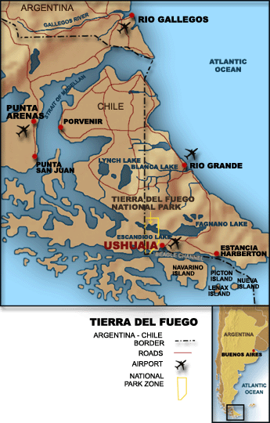
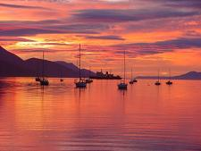
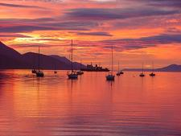

|
La
XXVI Vuelta a Tierra del Fuego, al igual que las ediciones
anteriores, tendrá su largada en la Ciudad de Río Grande, con una
primera etapa hasta la Ciudad de Ushuaia, donde se realiza un Parque
cerrado. Y en el segundo día de carrera se larga la segunda etapa
desde Ushuaia terminando en Rio Grande, presumiblemente como en la
última edición en el Autódromo de Rio Grande.
Los pilotos que ya se
atrevieron a largar la Vuelta, ya se recibieron de enduristas. Pues
independientemente de si pudieron completarla o no, por la dureza
del recorrido, es de valientes intentarlo. Y como cada vez gusta
más, piloto que corrió, vuelve. Claro, porque volver es "diplomarse"
de endurista.
Y si usted es un
piloto que ama el enduro y el off road y no ha corrido la Vuelta de
Tierra del Fuego, aún no puede decir que lo ha visto todo.
¿Que espera? Envíe ya
su pre-inscripción y comience a juntar adrenalina para vivir la
Carrera de su Vida !
PRE - INSCRIPCIÓN |
 

 Powered by
Powered by